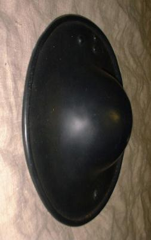
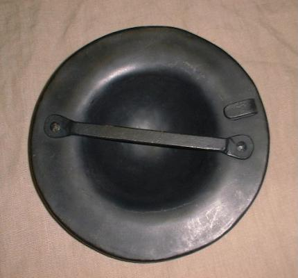

Small Buckler (c. 15th Century Style)


Small Buckler (15th Cenury Style):
Made from 0.050" (~18 ga.) 1050 Heat Treated Spring
Steel (Quenched at 1500F, Tempered at 600F for 30 minutes).
Finished Oct. 2000 (Coated with baked on oil)
Finished Oct. 2000 (Painted Black) (Shown)
I would build this buckler in the following order:
1) Cut out the blank (i.e. round sheet metal piece) for
the buckler.
2) Finish the edge of the blank.
3) Roll the edge of the buckler all the way around.
4) Dish the center area of the buckler.
5) Make the handle and rivet it to the buckler.
6) Make the belt hook and rivet it to the buckler.
Heat Treating (steps 7 - 10) are Optional:
7) The outside surface of the buckler should be fairly smooth
before doing any heat treating. Put a medium (around a 220 grit)
finish on the outside to remove any marring on it.
8) Heat the buckler to 1575F/860C in a kiln and quench
it in water. You need to quench the buckler within a few seconds of opening
the kiln.
9) If you want a polished or painted finish then skip this
step. If you want to heat blue the buckler then put a medium (around a
220 grit) finish on the outside of the plates. This assumes that
you would like to leave the fire scale on the inside as a rust barrier.
10) Heat the buckler to 600F/315C in a kiln for 30 minutes
to temper the buckler so it will be somewhat flexible and not crack
when struck. It is very important that the temperature stays within
10 degrees or so of what you set it to. If you don't know for
sure that the temperature control works correctly on your kiln then
you will want to check it with an oven thermometer that can measure to
650F/343C (don't over heat the thermometer).
11) If you want a polished or painted finish on the buckler
then do the finishing work.
Copyright 2000 Craig W. Nadler All rights reserved